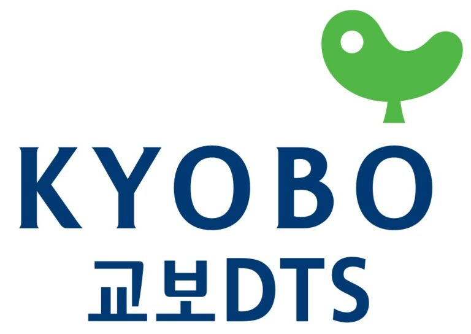
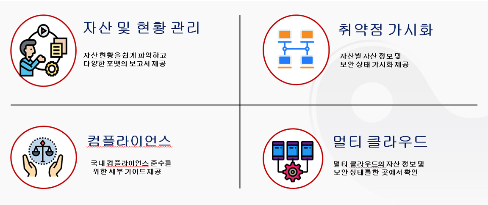
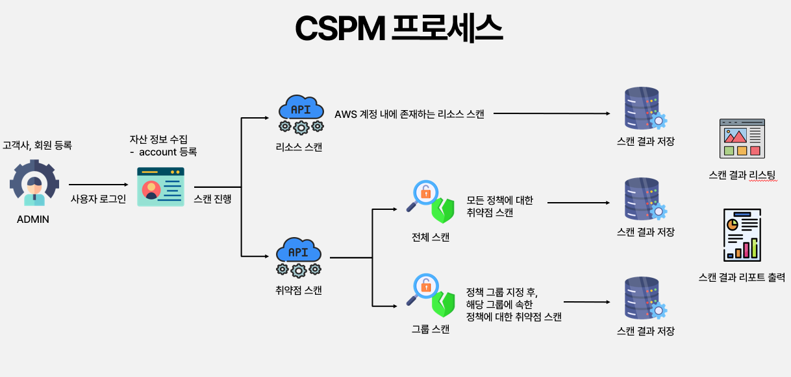
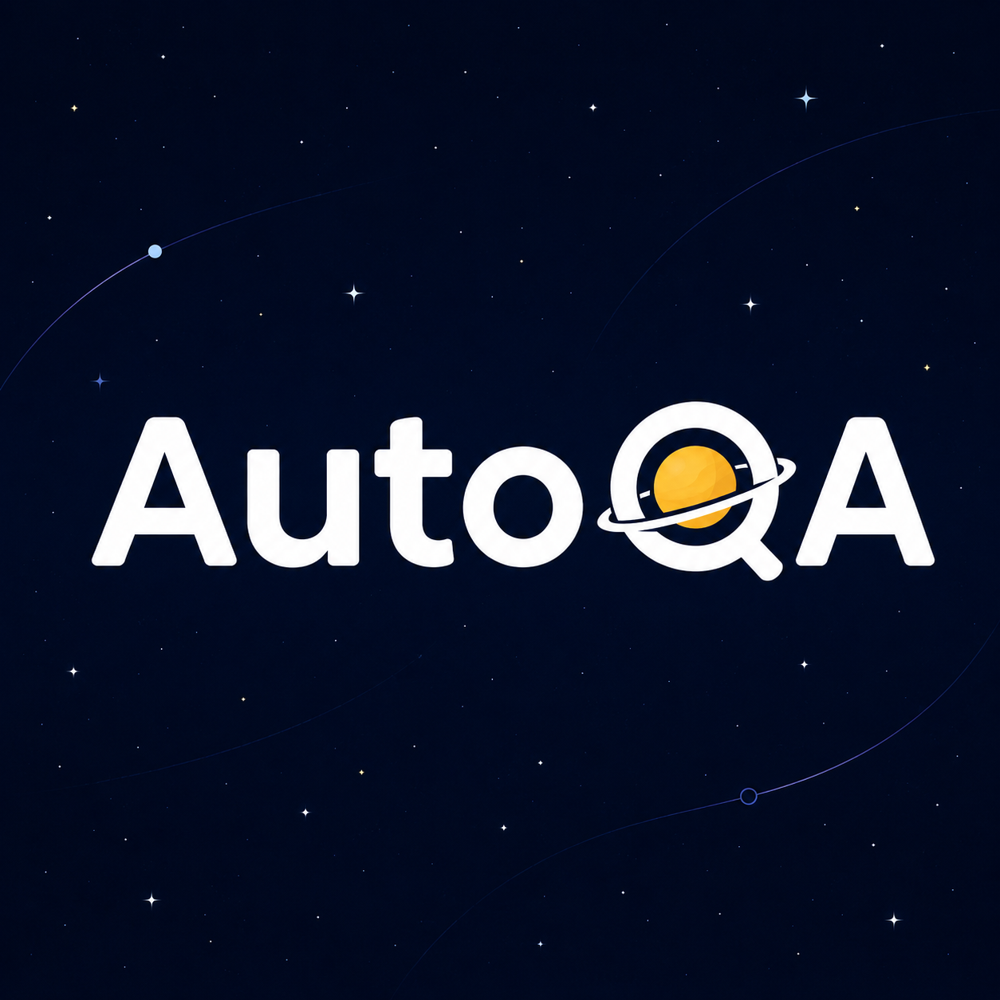
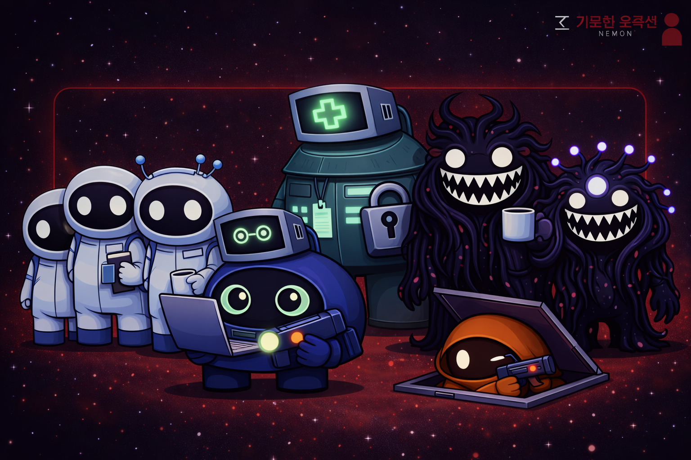

About
안녕하세요. 백엔드 개발자 김승현입니다.
Tech Stack
Certification
 AWS DVA — 2026.05
AWS DVA — 2026.05
다방면으로 기술을 공부하여 서비스를 구축해보려는 시도를 합니다.
- 단순히 프로그래밍 언어를 공부하는 것이 아닌, 전체적인 프로세스 흐름을 파악하는 것을 중요하게 생각합니다.
- "승현님 덕에 개발이 편했어요" 라는 말을 듣는 것이 좋습니다. 초기 환경 구축, 모니터링, CI/CD 작업의 자동화 등 팀의 생산성 향상을 위해 적극적으로 기여하고 있습니다.
- 나만 알고 넘어가는 것이 아니라, 팀원들도 이해할 수 있도록 학습한 내용과 문제 해결 과정을 문서로 정리하고 공유하고 있습니다.
맡은 일에 책임감을 느끼며 잘 마무리 하는 것을 중요하게 여깁니다.
- 자신만이 아는 것이 아니라 해당 코드를 유지보수할 뒤에 사람을 위한 가이드를 제시합니다.
- 시간에 따라 자연스럽게 변화하는 서비스에 맞춰 확장성과 유지보수를 용이하게 하는 코드를 작성합니다.
- 단순히 개발을 하는 직군이 아닌 타 팀과의 협력에 적극적으로 참여하여, 의견을 내는 것이 더 좋은 서비스를 만들거라 생각합니다.
Work Experience

KYOBO_DTS CSPM
DevOps / Backend 2024.07 - 2024.08 (2개월) 6인 개발🧩 프로젝트 개요
Cloud Security Posture Management(CSPM) 기반으로 AWS 자원을 수집, 스캔하여 취약점을 탐지하고 상태를 관리하는 시스템입니다.

⚙️ 핵심 로직
자원 수집, 정책 기반 취약점 판단, 상태 트래킹(OPEN/EXCEPTION/CLOSE)을 위한 파이프라인과 스케줄러가 핵심입니다.

👨💻 주요 기여도
Backend
1. AWS SDK 기반 자원 스캔 로직 개발 및 고도화
2. DB 테이블 재설계
3. 취약점 탐지 및 상태 관리 시스템 설계/구현
DevOps
1. CI 구성 및 개발 환경 가이드
2. 사내망 배포 및 접근 제어 개선
🧯 트러블 슈팅
DB 테이블 과다 생성 문제 개선 문제: 자원별 테이블 분리로 AWS 수집 자원이 늘어날때마다 DB 테이블이 늘어나야 되는 상황 발생 그로 인해 유지보수 및 확장성 문제 발생. 해결: 모든 자원을 JSON 형태로 단일 테이블에 저장하도록 변경. 리소스 타입은 구분 필드로 관리해 기존 14개 이상 테이블을 1개로 통합. 배운점: 확장성이 요구되는 도메인에서는 “정적 스키마 설계”보다 “유연한 데이터 모델”이 중요하고 생각하게 되었습니다. 이로 인해 NoSQL에 관심을 가지게 되었습니다.
자원 중복 저장 및 취약점 판단 방식 고도화 문제: 스캔 시 중복 자원 저장으로 데이터 적재가 과다. 해결: JSON 키 정렬 후 문자열 비교로 변경 여부 판단해 변경이 없으면 timestamp만 갱신. 배운점: 데이터 비교는 “내용 기반 비교”가 아닌 “구조 표준화 후 비교”가 필요하다고 느낍니다. 또한 해시 기반의 비교를 하면 더 최적화를 할 수 있다는 것을 깨달았습니다.
기존 코드 기반 기능 확장 문제: 이미 일부 구현된 코드에 새로운 요구사항을 반영해야 하는 상황 해결: 먼저 핵심 로직을 분석하고 관련 메서드를 디버깅해 역할을 파악한 뒤, 점진적으로 기능을 구현하고 기존 코드와 통합. 배운점: 레거시 코드 확장은 수정으로 시작하는게 아니라 이해부터 시작해야 된다고 생각하게 되었습니다. 또한 하나의 기능에 대한 API 명세서가 자세할수록 얼마나 좋은지 느끼게 되었습니다.
Project

AutoQA
Playwright / DevOps / Backend 2026.04 - 2026.05 (2개월) 6인 개발🧩 프로젝트 개요
AutoQA는 사용자가 테스트 대상 URL과 자연어 요구사항을 입력하면, 웹 페이지를 자동 분석하고 AI가 생성한 QA 시나리오를 실제 브라우저에서 실행하여 결과 리포트까지 제공하는 AI 기반 웹 QA 자동화 플랫폼입니다.
⚙️ 핵심 로직
Playwright Worker가 웹 화면의 구성과 클릭·입력 가능한 요소를 분석해 사용자가 이용할 수 있는 기능 흐름으로 정리하고, AI가 작성한 테스트 절차를 실제 브라우저에서 다시 검증합니다. 분석, AI 생성, 실행은 작업 큐 기반으로 처리하며, 스크린샷과 실행 결과는 실시간으로 제공합니다.
👨💻 주요 기여도
Playwright / Backend
1. 웹 분석 크롤 엔진 개발
2. QA 실행 엔진 개발
3. 실시간 증적 전달
4. AI 입력 및 학습 데이터 연계
DevOps
1. AWS 기반 비동기 파이프라인 설계
2. Terraform 기반 인프라 코드화
3. Jenkins CI/CD 구축
4. 예열용 ECS Worker 및 Shell Script 구현
🧯 트러블 슈팅
동적 화면에서 테스트 대상 요소를 놓치는 문제 문제: 화면 전환이 동적으로 이루어지는 웹 서비스에서는 일반 버튼이나 링크 외에도 클릭 가능한 카드와 커스텀 드롭다운이 실제 페이지 이동과 기능 실행을 담당해, 태그 중심 분석만으로는 AI 테스트 절차에 필요한 행동 흐름이 누락됐습니다. 해결: 화면 요소의 텍스트, 접근성 정보, 클릭 가능 여부를 함께 분석해 사용자가 실행할 수 있는 행동 후보를 찾고, 이를 기능별 이동·입력 흐름으로 정리했습니다. 배운점: 웹 자동화에서는 화면 정보를 많이 수집하는 것보다, 사용자 행동으로 연결되는 요소를 정확히 분류하는 과정이 테스트 품질과 실행 범위를 결정한다는 점을 배웠습니다.
분석 단계와 테스트 실행 단계의 로그인 상태 불일치 문제: 로그인 이후 기능을 분석한 뒤 실행 단계에서 다시 로그인을 시도하면 자동화 차단, 세션 차이, 인증 상태 불일치로 인해 정상 테스트도 불안정하게 실패할 수 있었습니다. 해결: 로그인 전후 분석 흐름을 분리하고, 로그인 성공 후의 세션 정보를 저장하여 인증이 필요한 화면 분석과 테스트 실행에서 동일하게 재사용하도록 구현했습니다. 배운점: E2E 테스트는 동작 실행뿐 아니라 인증 상태와 세션 생명주기를 동일한 테스트 조건으로 유지해야 신뢰도 있는 결과를 만들 수 있음을 체감했습니다.
UI 변경 이후 테스트 대상 요소를 찾지 못하는 문제 문제: 분석 시점에 저장한 요소 위치나 속성이 배포 후 변경되면, 테스트 목적은 유효해도 브라우저 자동화가 클릭·입력 대상을 찾지 못해 실행이 실패했습니다. 해결: 기존 대상 탐색이 실패하면 화면 텍스트, 레이블, 입력 안내문, 요소 역할 등의 특징을 현재 화면과 비교해 가장 유사한 대상을 다시 찾는 복구 로직을 추가했습니다. 배운점: 테스트 자동화의 유지보수성은 고정된 위치 정보만 잘 저장한다고 확보되지 않으며, 화면 변경을 전제로 한 복구 전략을 실행 엔진 안에 설계해야 한다는 점을 배웠습니다.
AI 실행 환경 변경과 Worker 첫 요청 지연 대응 문제: AI 모델 요구사항에 따라 GPU 인스턴스와 환경 설정이 바뀌고, 비용 절감을 위한 Worker 축소 정책으로 첫 요청 시 기동 지연이 발생할 수 있었습니다. 해결: ECS, SQS, S3, GPU Worker 등의 구성을 Terraform으로 코드화해 변경 이력을 관리하고, Playwright Worker에는 필요 시 미리 켤 수 있는 예열용 ECS 서비스와 운영 Shell Script를 추가했습니다. 배운점: 운영 인프라는 성능만이 아니라 재현성, 변경 추적, 비용과 응답 속도의 trade-off까지 함께 관리해야 안정적인 서비스로 이어진다는 것을 경험했습니다.
Re:Flow
Backend / DevOps / BlockChain 2026.02 - 2026.04 (2개월) 6인 개발🧩 프로젝트 개요
블록체인 기반 투명 기부 플랫폼입니다.
기부 → 분배 → 소비 → 정산 전체 흐름을 온체인에 기록하며,
AI 기반 FDS(Fraud Detection System)가 이상 거래를 탐지합니다.
⚙️ 핵심 로직
KRW 결제 → RLF(ERC20) 민팅 → 지역 풀 기부 → 관리자 확정 → 월말 분배/이월 → 수혜자 소비 → 가맹점 정산 후 토큰 소각으로 이어지는 토큰 순환 구조가 핵심입니다.
Spring Batch + Quartz 스케줄러가 월 1회 FastAPI FDS 서버에 배치 요청을 보내고, DQN 모델이 17개 피처를 기반으로 이상 거래를 탐지합니다.
👨💻 주요 기여도
Backend
1. BlockchainManagerService 설계 및 구현 — 컨트랙트의 모든 기능을 REST API
2. Web3j 기반 Spring Boot ↔ Hardhat, 테스트넷 RPC 연동
3. 수탁형 지갑 방식 채택 — 서버가 어드민 지갑으로 트랜잭션 대행 서명
DevOps
1. Traefik 리버스 프록시 구성 — 경로 기반 라우팅으로 단일 도메인 멀티 서비스 운영 + Let's Encrypt TLS 자동 발급
2. Docker Compose 3단계 분리 — 로컬 인프라 / 서버 인프라 / 애플리케이션 컨테이너 환경별 독립 관리
3. Jenkins CI/CD 파이프라인 — GitLab Webhook + 15개 환경변수 + Gradle 빌드/배포/헬스체크 자동화
4. Dozzle(실시간 로그), Redis Commander 등 운영 관측 도구 통합
BlockChain
1. DonationToken.sol — ERC20 + Ownable 기반 커스텀 토큰, 소유권 DonationPlatform 컨트랙트로 이전
2. DonationPlatform.sol — 5개 역할, 6개 데이터 구조, 14개 이벤트 설계, ReentrancyGuard 적용으로 재진입 공격 차단
3. 배포 자동화 스크립트(deploy.js) — 배포 후 .env를 컨트랙트 주소로 자동 갱신, Hardhat 로컬 및 Sepolia 테스트넷 검증 완료
🧯 트러블 슈팅
컨트랙트 재배포 시 백엔드/프론트엔드 주소 불일치 문제 문제: 스마트 컨트랙트를 수정·재배포할 때마다 백엔드·프론트엔드 .env 파일에 컨트랙트 주소를 수동으로 복사해야 했고, 팀원 간 주소 불일치로 트랜잭션 실패가 반복됐습니다. Sepolia 테스트넷과 로컬 Hardhat 환경 모두에서 동일한 문제가 발생했습니다. 해결: deploy.js가 배포 완료 즉시 backend/.env와 frontend/.env를 Node.js fs로 파싱하여 컨트랙트 주소를 정규식 치환으로 자동 업데이트하도록 구현했습니다. Sepolia 테스트넷과 로컬 Hardhat 모두 동일 스크립트로 처리하며, Docker 볼륨 마운트로 컨테이너 내 배포 시에도 호스트 파일이 갱신되도록 설정했습니다. 배운점: 반복되는 수동 설정 작업은 실수의 온상입니다. 배포 스크립트가 환경 설정까지 자동으로 갱신하도록 자동화 범위를 넓히면 팀 전체의 개발 사이클 신뢰도가 높아진다는 것을 체감했습니다.
Docker 컨테이너 기동 순서로 인한 컨트랙트 배포 실패 문제: Hardhat 노드 컨테이너가 완전히 준비되기 전에 컨트랙트 배포 스크립트가 실행되어 RPC 연결 실패로 배포가 중단됐습니다. Docker Compose의 depends_on만으로는 서비스의 실제 준비 상태를 보장할 수 없었습니다. 해결: start.sh에서 eth_blockNumber JSON-RPC를 wget으로 폴링하여 Hardhat 노드가 응답을 반환할 때까지 배포 스크립트 실행을 지연시켰습니다. 노드 레디니스가 확인된 후에만 deploy.js를 실행해 배포 순서를 보장했습니다. 배운점: Docker Compose의 depends_on은 컨테이너 시작만 보장할 뿐 서비스 준비 여부는 보장하지 않습니다. 실제 서비스 레디니스는 헬스체크 폴링으로 직접 확인해야 한다는 것을 배웠습니다.
대규모 수혜자 분배 시 Gas Limit 초과 문제 문제: 수혜자 수가 증가할수록 단일 distributeAll 트랜잭션의 가스 비용이 블록 gas limit을 초과하여 트랜잭션이 실패했고, 수혜자 규모에 따라 분배 자체가 불가능한 상태가 발생했습니다. 해결: 분배 로직을 collectRegionFunds(잠금) → distributeChunk(청크 반복) → finalizeDistribution(완료) 3단계로 분리하고, 백엔드가 청크 크기를 조절하며 반복 호출하는 방식으로 임의의 수혜자 수를 처리할 수 있도록 설계했습니다. Web3j의 트랜잭션 receipt 폴링으로 각 청크 완료 여부를 확인한 뒤 다음 단계를 진행했습니다. 배운점: 블록체인은 단일 트랜잭션의 연산량에 상한이 있습니다. 대용량 처리 로직은 처음부터 청크 분할과 단계별 상태 추적을 고려해 설계해야 임의의 규모에서도 안정적으로 동작한다는 것을 실감했습니다.

A - 601
DevOps / Backend 2026.01 - 2026.02 (2개월) 4인 개발🧩 프로젝트 개요
AI 판사 기반 몰입형 SF 서바이벌 마피아 게임 프로젝트입니다.
⚙️ 핵심 로직
WebRTC를 활용한 화상 채팅과, WebSocket 기반의 이벤트 처리, 게임 룸 매니저, 상태 동기화와 기존 마피아 게임에 AI 판사 시스템을 이용한 판결이 핵심입니다.
👨💻 주요 기여도
Backend
1. 백엔드 아키텍처 가이드 및 코드 리뷰 리딩
2. Livekit 기반 WebRTC 권한 제어 구현
3. WebSocket 기반 실시간 게임 엔진 설계/구현
DevOps
1. Docker Compose 기반 개발·운영 인프라 구성
2. GitLab + Jenkins CI/CD 구축 및 배포 자동화
3. 서버 네트워크 / 도메인 / TLS 인증 구성
🧯 트러블 슈팅
LiveKit 음성이 밤 페이즈에서 차단되지 않는 현상 문제: 클라이언트에서 mute() 처리만 적용했을 때 서버가 각 플레이어의 권한을 강제할 수 없어, 외계인 플레이어가 밤 시간에도 인간 팀의 음성을 청취하는 치팅 가능성이 존재했습니다. 해결: LiveKit RoomServiceClient API를 활용해 페이즈 전환 시마다 서버에서 각 플레이어의 canPublish / canSubscribe 권한을 직접 갱신했습니다. 낮에는 전원 청취 가능, 밤에는 외계인끼리만 청취 가능하도록 역할·생존 여부·페이즈 조합으로 권한을 동적으로 제어했습니다. 배운점: 실시간 게임의 룰 강제는 클라이언트 처리에만 의존해서는 안 됩니다. 보안이 중요한 제어는 서버에서 직접 적용해야 클라이언트 조작을 원천 차단할 수 있다는 것을 체감했습니다.
Nginx 리버스 프록시에서 컨테이너 미기동 시 500 에러 문제: proxy_pass http://backend:8080처럼 업스트림을 직접 지정하면, 백엔드 컨테이너가 아직 시작되지 않은 경우 Nginx worker가 죽거나 500 에러가 발생했습니다. 해결: resolver 127.0.0.11 valid=30s(Docker 내부 DNS)와 set $upstream http://backend:8080 변수 패턴을 조합해, 업스트림 컨테이너 미기동 상태에서도 Nginx가 정상 기동되고 런타임에 DNS를 재조회하도록 설정했습니다. 배운점: Docker 환경에서 Nginx upstream 설정 시 서비스 기동 순서와 DNS 재조회 전략을 함께 고려해야 합니다. 컨테이너 환경에서는 변수 기반 lazy DNS 해석이 안정적인 운영의 기반이 됩니다.
REST 기반 설계의 실시간성 한계로 WebSocket 전환 문제: 초기에는 REST로 게임을 구현하려 했으나, 특정 역할(예: 낮 시간 임의로 스킬 사용)의 특성상 실시간성 부족 문제가 발생했습니다. 해결: 서버 타이머 기반 진행 구조로 전환하고 WebSocket을 도입해 실시간 이벤트를 처리하도록 개선했습니다. 또한 Pub/Sub 패턴으로 프론트-백 메시지 규격을 정리해 통신 복잡도를 낮췄습니다. 배운점: 실시간 게임은 요청 기반이 아니라 상태 기반/이벤트 기반으로 설계해야 안정적이라는 점을 체감했습니다.
팀원 이탈로 인한 레거시 코드 정리 및 리팩토링 문제: 팀원 2명이 중도 이탈하며 코드 정리가 되지 않은 채 MR/커밋이 남았고, 최신 코드와 괴리로 충돌이 발생했습니다. 해결: 기존 코드를 리팩토링하여 구조를 정리하고, 이후에는 팀원이 코드 최신화를 유지할 수 있도록 브랜치/협업 가이드라인을 제시해야겠다고 정리했습니다. 배운점: 협업 프로젝트에서는 기술 구현 과정에서 코드 최신화 규칙과 협업 프로세스 설계가 서비스의 품질을 좌우한다고 생각하게 되었습니다.
🧩 프로젝트 개요
Newstagram은 사용자의 활동 로그를 분석하여 RSS 뉴스 피드를 선별 제공하고, 개인화된 기사를 추천하는 지능형 뉴스 서비스입니다.
⚙️ 핵심 로직
RSS 뉴스 수집·정제, 핫 이슈 뉴스 피드, 개인 맞춤 뉴스 피드, 사용자 문장을 통한 나만의 뉴스 피드 제공이 핵심입니다.
👨💻 주요 기여도
Backend
1. 사용자 문장 기반 백터 기사 검색 파이프라인 구축
DevOps
1. Docker 기반 개발 환경 통합 및 초기 가이드 수립
2. GitHub Actions 기반 CI/CD 구축
3. AWS 기반 MSA 환경 구축 및 모니터링 체계 설계
🧯 트러블 슈팅
운영 환경 로그 메트릭 수집 문제 해결 문제: 배포 이후 서버 상태 및 로그 흐름을 실시간으로 파악하기 어려웠습니다. 해결: CloudWatch Agent를 EC2에 설치하고 로그 및 메트릭 수집 설정을 구성해, 관리자용 대시보드를 구축했습니다. 배운점: 배포는 끝이 아니라 시작이며, 운영 환경에서는 모니터링 및 로그 확보가 필수라고 느꼈습니다.
MSA 멀티 모듈에서 JPA 엔티티 중복 문제 해결 문제: api-server, rss-collector, logging-server 세 모듈로 서버를 분리하면서 동일한 JPA 엔티티를 각 모듈에 중복 선언해야 했고, 엔티티 변경 시 모든 모듈을 개별 수정해야 하는 유지보수 문제가 발생했습니다. 해결: newstagram-domain 모듈을 독립 Gradle 라이브러리로 분리하여 세 서비스가 동일한 JPA 엔티티와 pgVector 도메인 모델을 공유하도록 구조를 개선했습니다. 엔티티 변경 시 단일 모듈만 수정하면 되어 유지보수 범위가 명확해졌습니다. 배운점: MSA는 단순히 서버를 나누는 것이 아니라 공유 자산의 경계와 의존 방향을 명시적으로 설계하는 작업입니다. 공통 도메인을 라이브러리로 분리하면 중복을 제거하면서도 각 서비스의 독립적 배포를 유지할 수 있음을 체감했습니다.
한국어 자연어 검색 품질과 응답 속도 최적화 문제: 초기 Komoran 형태소 분석만으로는 사용자 의도와 시간 표현("요즘", "최근")을 파악하지 못했고, pgVector 유사도 검색만으로는 키워드 없이 의미만 유사한 관련 없는 결과가 포함됐습니다. 동일 쿼리에 매번 임베딩 API를 재호출해 비용과 응답 지연도 발생했습니다. 해결: Komoran 명사 추출 + 시간 표현 파싱(요즘→7일, 최근→3일) → OpenAI 쿼리 임베딩 + GPT-4o-mini 카테고리 분류 → pgVector 코사인 유사도 검색(임계값 0.80, 상위 800개) → In-memory 키워드 이중 필터링의 다단계 하이브리드 파이프라인을 구성했습니다. 동일 쿼리는 @Cacheable로 Redis에 캐싱해 재호출 시 임베딩 API 없이 즉시 반환합니다. 배운점: 의미 검색과 키워드 검색은 각각 한계가 있으며 하이브리드 파이프라인으로 보완할 때 검색 품질이 높아집니다. AI API 호출은 캐싱 전략과 모델 선택으로 비용·속도 균형을 함께 고려해야 한다는 것을 배웠습니다.
클라우드 비용 과다 청구 (Kafka 설정 오류) 문제: Confluent Cloud Kafka 설정을 잘못 구성하여 예상치 못한 약 300달러 비용이 발생했습니다. 해결: 사용하지 않는 리소스 즉시 정리, 공식 이메일 및 고객센터를 통해 환불 절차 진행 배운점: 클라우드 환경에서는 기능 구현보다 리소스 설정과 과금 구조 이해가 더 중요할 수 있다는 것을 체감했습니다. 이후 비용 모니터링의 중요성을 인지하고 관리 체계를 점검하게 되었습니다.
🧩 프로젝트 개요
Lime (Live In Media Encoder) 다양한 동영상 업로드 및 라이브 스트리밍 서비스를 제공하는 웹 기반 미디어 플랫폼
⚙️ 핵심 로직
HLS 기반 VOD 스트리밍과 WebRTC 기반 실시간 방송 기능을 모두 구현한 하이브리드 미디어 플랫폼
👨💻 주요 기여도
Backend
1. Azure 기반 인프라 설계 및 클라우드 환경 구축
2. WebSocket 기반 실시간 채팅 시스템 구현
3. JWT 기반 사용자 인증 및 REST API 개발
PM
1. 프로젝트 리딩 및 일정 관리
🧯 트러블 슈팅
팀 프로젝트 리딩 과정에서의 일정/역할 불명확 문제 개선 문제: 낯선 팀원들과 협업하며 일정과 역할 분배가 명확하지 않아 초기 개발 속도가 지연되었습니다. 해결: 주간 회의 및 이슈 공유 체계 도입, 기술 격차가 있는 팀원을 위한 스터디 세션 진행 배운점: 좋은 프로젝트는 기술보다 구조화된 일정 관리와 명확한 역할 정의에서 시작된다고 느꼈습니다.
실시간 채팅(WebSocket) 구현 방식 결정 문제: 실시간 채팅 기능 구현 시 REST, Polling, WebSocket 중 어떤 방식을 선택해야 할지 판단이 필요했습니다. 또한 테스트 환경 구축에도 어려움이 있었습니다. 해결: WebSocket 기반 구조로 설계해 저지연 실시간 통신 구현 배운점: 실시간 서비스는 단순 API 설계가 아니라, 통신 구조에 대한 이해가 핵심이라는 것을 체감했습니다.
Azure 기반 인프라 학습 및 구축 문제: Azure, VM, Blob Storage, DB 등 클라우드 환경에 대한 경험이 부족했습니다. 해결: 공식 문서 및 강의를 병행 학습, 네트워크 및 클라우드 구조 이해 후 서비스 배포 성공 배운점: 클라우드는 단순 배포 환경이 아니라, 네트워크·보안·스토리지 이해가 함께 요구되는 종합 기술 영역임을 깨달았습니다.
Activities
JAVA 전공반
웹 풀스택 개발자 과정
컴퓨터 소프트웨어 학과 전공